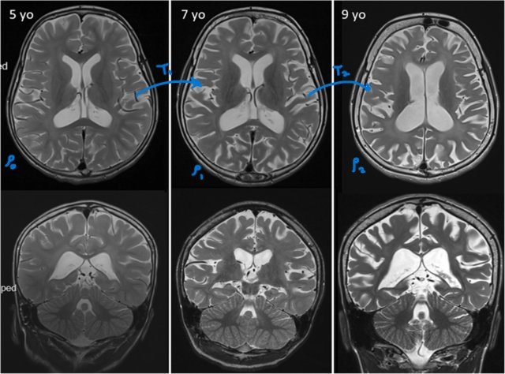

Introduction
In the context of biomedics, understanding disease progression is critical in developing effective diagnostic and therapeutic strategies. Medical imaging provides us with invaluable data, capturing the spatial and structural changes in the human body over time. Yet, analyzing these changes quantitatively and consistently remains challenging. Here, we explore how optimal transport (OT) can be applied to model disease progression in a geometrically meaningful way, providing a tool to predict deformations and shape changes in diseases like neurodegeneration, cancer, and respiratory diseases.
What is Optimal Transport?
Optimal transport is a mathematical framework originally developed to solve the problem of transporting resources in a way that minimizes cost. The problem was formalized by the French mathematician Gaspard Monge in 1781. In the 1920s A.N. Tolstoi was among the first to study the transportation problem mathematically. However, the major advances were made in the field during World War II by the Soviet mathematician and economist Leonid Kantorovich. However, OT is a tough optimization problem. In 2000, Benamou and Brenier propose a convex formulation. Villani explains the history and mathematics behind OT in great detail in his book (Villani 2021), which is in fact very popular and well appreciated.
Mathematically, OT finds the most efficient way to “move” one distribution to match another, which is useful in medical imaging where changes in structure and morphology need to be quantitatively mapped over time. OT computes a transport map (or “flow”) that transforms one spatial distribution into another with minimal “work” (measured by the Wasserstein distance). This idea has strong applications in medical imaging, particularly for analyzing disease progression, as it provides a way to track changes in anatomical structures over time.

Why Optimal Transport for Disease Progression?
The OT framework is uniquely suited for disease progression modeling because it allows us to:
- Capture spatial and structural changes: OT computes a smooth, meaningful transformation, preserving the continuity of shapes, making it ideal for medical images that track evolving structures.
- Quantify changes robustly: By calculating the minimal transport cost, OT provides a quantitative measure of how much a structure (e.g., brain tissue) changes, which can correlate with disease severity.
- Compare across patients and populations: OT-based metrics can be standardized across subjects, enabling comparisons between different patient groups or disease stages.
Popular Applications of OT to Study Disease Progression:
- Neurodegeneration (e.g., Alzheimer’s Disease): OT maps brain atrophy across time points in MRI scans, quantifying volume and cortical thickness changes crucial for staging and monitoring Alzheimer’s.
- Cancer: OT tracks tumor morphology changes, helping assess treatment response by measuring growth, shrinkage, or shape shifts, even aiding relapse predictions.
- Respiratory Diseases (e.g., COPD): OT compares longitudinal lung CTs to quantify tissue loss distribution, providing spatial insights for monitoring COPD progression and treatment adjustment.
Mathematics of Optimal Transport
Monge Formulation
The Monge formulation of optimal transport, introduced in 1781, addresses the problem of moving mass efficiently from one distribution to another. Given two distributions:
- Source Distribution: \(\mu\) on \(X\)
- Target Distribution: \(\nu\) on \(Y\)
we seek a transport map \(T\): \(X\) to \(Y\) that minimizes the transport cost, typically \(c(x, T(x)) = \|x - T(x)\|^p\).
The Monge problem can be written as:
\[ \min_T \int_X c(x, T(x)) \, d\mu(x) \]
subject to \(T_\# \mu = \nu\), meaning that the map \(T\) must push \(\mu\) to \(\nu\), ensuring all mass is preserved without splitting.
Key Points:
- Transport Map \(T\): Monge’s formulation requires a direct mapping of mass from \(\mu\) to \(\nu\).
- No Mass Splitting: Unlike relaxed formulations, the Monge problem doesn’t allow fractional mass transport, making it challenging to solve in complex cases.
- Cost Function: The choice of \(c(x, y)\) affects the solution—common choices include distance \(\|x - y\|\) and squared distance \(\|x - y\|^2\).
Shortcoming
The Monge formulation lacks flexibility due to its one-to-one mapping constraint, which led to the Kantorovich relaxation, allowing more general solutions by enabling mass splitting. The Monge formulation captures the essence of spatial mass transport with minimal cost, inspiring modern approaches in diverse fields.
Kantorovich formulation
The Kantorovich formulation, introduced by Leonid Kantorovich in 1942 (Kantorovich (2006)), generalizes the Monge problem by allowing “mass splitting,” where mass from one source point can be distributed to multiple target points. This flexibility makes it possible to solve a broader range of transport problems.
Kantorovich’s Problem:
Instead of finding a single transport map \(T\), the Kantorovich formulation seeks a transport plan \(\gamma\), a joint probability distribution on \(X \times Y\), such that:
\[ \min_\gamma \int_{X \times Y} c(x, y) \, d\gamma(x, y) \]
where \(c(x, y)\) represents the cost of transporting mass from \(x \in X\) to \(y \in Y\). The transport plan \(\gamma\) must satisfy marginal constraints:
\[ \int_Y d\gamma(x, y) = d\mu(x) \quad \text{and} \quad \int_X d\gamma(x, y) = d\nu(y), \]
ensuring that \(\gamma\) moves all mass from \(\mu\) to \(\nu\).
Key Points:
- Transport Plan \(\gamma\): A probability measure over \(X \times Y\) that allows fractional mass movement, broadening the solution space.
- Marginal Constraints: These ensure \(\gamma\) aligns with source \(\mu\) and target \(\nu\) distributions, preserving total mass.
- Cost Function: Commonly, \(c(x, y) = \|x - y\|\) or \(c(x, y) = \|x - y\|^2\), chosen based on the desired penalty for transport distance.
Advantages:
- Flexibility: Mass splitting allows for a solution even when \(\mu\) and \(\nu\) have different structures (e.g., continuous to discrete).
- Computational Feasibility: The problem can be solved via linear programming or faster algorithms using entropic regularization.
Hence, the Kantorovich formulation provides a robust framework for optimal transport problems, enabling applications across fields where flexibility and computational efficiency are essential.
Benamou-Brenier Formulation (Convex OT)
The Benamou-Brenier formulation (Benamou and Brenier (2000)) provides a dynamic perspective on optimal transport, interpreting it as a fluid flow problem. Instead of transporting mass directly between two distributions, this approach finds the path of minimal “kinetic energy” needed to continuously transform one distribution into another over time.
The Benamou-Brenier formulation considers a probability density \(\rho(x, t)\) evolving over time \(t \in [0, 1]\) from an initial distribution \(\rho_0\) to a final distribution \(\rho_1\). The goal is to find a velocity field \(v(x, t)\) that minimizes the action, or “kinetic energy” cost:
\[ \min_{\rho, v} \int_0^1 \int_X \frac{1}{2} \|v(x, t)\|^2 \rho(x, t) \, dx \, dt, \]
subject to the continuity equation:
\[ \frac{\partial \rho}{\partial t} + \nabla \cdot (\rho v) = 0, \]
which ensures mass conservation from \(\rho_0\) to \(\rho_1\).
Key Points:
- Dynamic Interpretation: Unlike Monge and Kantorovich, the Benamou-Brenier formulation finds a time-dependent transformation, representing a continuous flow of mass.
- Velocity Field \(v(x, t)\): Defines the “direction” and “speed” of mass movement, yielding a smooth, physical path of minimal kinetic energy.
- Continuity Equation: Ensures mass conservation over time, maintaining that mass neither appears nor disappears.
Advantages:
- Smoothness: Provides a continuous path for evolving distributions, well-suited for dynamic processes.
- Computational Benefits: The problem is formulated as a convex optimization over a flow field, often solved with efficient numerical methods.
The Benamou-Brenier formulation expands optimal transport by introducing a dynamic flow approach, making it especially useful for applications requiring continuous transformations. Its physical interpretation has brought valuable insights to fields that rely on time-evolving processes.
Conclusion
The three formulations of optimal transport—Monge, Kantorovich, and Benamou-Brenier—each provide unique perspectives and methodologies for addressing the fundamental problem of transporting mass efficiently between distributions. The Monge formulation offers a direct approach, seeking a one-to-one mapping that minimizes transportation cost while preserving mass, making it intuitive but limited in applicability due to its constraints. In contrast, the Kantorovich formulation expands this framework by allowing mass splitting through the use of transport plans, making it more versatile for a wider range of problems, including those involving discrete and continuous distributions. Finally, the Benamou-Brenier formulation introduces a dynamic interpretation of transport, framing it as a flow problem governed by velocity fields. This perspective is particularly valuable in scenarios where time evolution plays a crucial role, allowing for smooth transitions between states. Together, these formulations form a comprehensive toolbox for optimal transport theory, finding applications across diverse fields such as logistics, computer graphics, machine learning, and medical imaging.